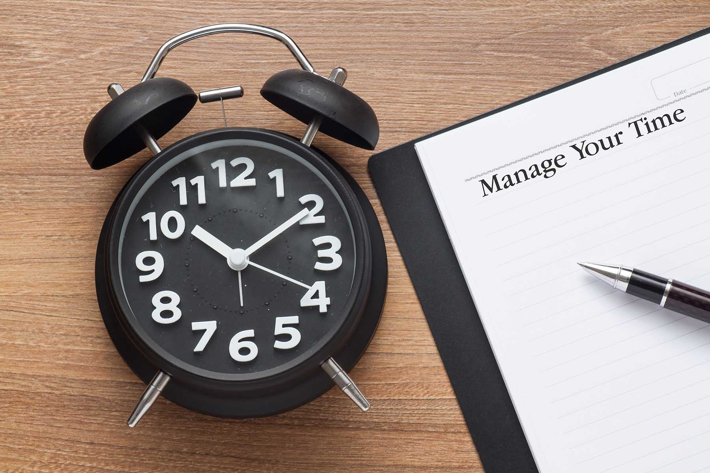

|

Попытки человека контролировать время начались глубоко в прошлом.
Сам термин «Тайм-менеджмент» появился относительно недавно, в начале 70-х годов 20 века. В
это время начали проводиться первые тренинги и семинары, где людей активно учили управлять
своим временем.
В далёком прошлом такого понятия, как тайм-менеджмент, конечно же, не существовало. Тем не
менее, история развития тайм-менеджмента берет начало именно в Древнем мире. Уже в самом
начале нашей эры (т .е. около 2000 лет назад) римский мыслитель Сенека предложил в письме
поэту Люцелию следующие идеи:
- Hазделять все время на потраченное хорошо, плохо и бесполезно;
- Вести постоянный учет времени в письменном виде;
- Прожив определенный период, оценивать его с точки зрения заполненности.
Итальянский ученый и писатель Альберти, живший в XV веке, утверждал, что люди, умеющие
управлять временем с пользой, будут успешны всегда и в любом деле. Для этого, согласно его
письмам, необходимо придерживаться двух правил:
-
Первое — каждый день с утра составлять список дел.
-
Второе — упорядочивать дела в порядке уменьшения важности. Такие действия,
как сон, еда и развлечения писатель считал менее важными, чем работа. Сам Альберти
строго придерживался своих принципов.
Развитие современного Тайм-менеджмента
Заметно повлияло на историю развития тайм-менеджмента появление промышленности.
Необходимость управлять слаженной работой сотен людей заставила искать новые способы
управления временем. На производствах был введен строгий график, появились расписания,
смены.
Немалое влияние на тайм-менеджмент оказало открытие Вильфредо Парето знаменитого
принципа «20:80». Применяя этот принцип к тайм-менеджменту, Парето пришел к
выводу, что 20% всех усилий дают 80% результата, а прочие 80% сил расходуются для
получения оставшихся 20% достижений. Отсюда следует вывод о разделении дел по степени
важности предполагаемого результата. Подобные идеи лежат в основе многих современных
тренингов по управлению временем.
Термин «тайм-менеджмент» возник в 70-х годах XX-го века. В это же время стали появляться
тренинги, обучающие программы, получили широкое распространение ежедневники. Первыми
клиентами были сотрудники крупнейших авиакомпаний.
История тайм-менеджмента в СССР началась во времена НЭПа. Наработки в этой области
назывались НОТ, что расшифровывалось как Научная Организация Времени. Следующая волна
популярности тайм-менеджмента в СССР пришла вместе с другими новшествами уже во второй
половине 80-х.
Сегодня существуют сотни тренингов, позволяющих овладеть искусством управления
собственным временем. Их востребованность позволяет предположить, что необходимость в
тайм-менеджменте с увеличением темпа жизни постоянно возрастает. Издаются новые книги,
появляются методики и системы, однако в их основе по-прежнему лежат принципы, созданные
гораздо раньше.
Тайм-менеджмент — техника управления временем, которая включает в себя
правила и принципы, которые помогают человеку правильно организовать свое время и достичь
максимальной эффективности в любом деле.
Тайм-менеджер - это человек, который учитывает психологические особенности
людей, условия труда и предлагает более эффективные графики работы. Он способен раскрыть в
человеке все его скрытые резервы и подсказать, каким путем повысить свою эффективность.
Альтернативная стоимость времени – цена тех благ, что смогли стать вашими в
единицу времени, но вы от них отказались, «приобретя» что-нибудь иное. Концепция полезна в
случае расстановки приоритетов, чтобы понимать, чем вы жертвуете, выполняя рутинные дела
вместо важных.
Дедлайн (deadline) – крайний срок для завершения выполнения задания. Если
результат получен позже, его ценность опускается.
Делегирование – перекладывание исполнения задания на персонал, сослуживцев,
внешних поставщиков, приобретение услуги, которая заменяет «собственноручное» решение
задачи. Если делегируются полномочия, значит, передаются ресурсы и права, нужные для
исполнения задачи.
Основные задачи Тайм-менеджмента:
- Анализ затрат времени на выполнение определенных задач.
- Постановка, формулирование и определение цели.
- Составление плана для достижения цели, а также расстановка приоритетов.
- Реализация цели. Подсказка, какие шаги нужно сделать в соответствии с планом.
- Составление списков дел, которые необходимо сделать.
- Фиксация времени с помощью хронометража.
Матрица управления временем
| |
Срочные |
Несрочные |
|
Важные
|
I.
- Проекты с горящим сроком.
|
II.
- Профилактические действия для поддержания работоспособности.
- Поиск новых возможностей.
|
|
Неважные
|
III.
- Посторонние разговоры и телефонные звонки.
- Какая-то корреспонденция, какие-то сообщения.
|
IV.
- Мелочи, отнимающие время
- Телефонные звонки.
- Праздное времяпровождение
|
Мифы тайм-менеджмента.
- Миф 1. Никто не может управлять временем.
Утверждение верное по форме, но ошибочное по содержанию. Управлять временем действительно невозможно (если,
конечно, вы не изобретатель машины времени). Никто не способен замедлить его объективный ход, ускорить или
остановить даже на мгновение.
Зато человек может делать следующее: управлять собой, своими решениями и действиями во времени, а также
заниматься определением приоритетов. Именно об этом и рассуждают практики тайм-менеджмента – об управлении
собственной жизнью.
- Миф 2. Тайм-менеджмент заставит меня работать больше и интенсивнее.
Работать много и уставать, пренебрегая отдыхом – прямой путь к переутомлению и депрессии. Необходимо
постоянно стремиться к снижению объёма работы при увеличении результативности. Как это сделать? Если
говорить коротко – то действовать строго по плану и уметь отделять второстепенное от главного.
Эффективно использовать методы тайм-менеджмента – не значит делать больше или увеличивать производительность
за счет скорости выполнения работ.
Речь идёт о повышении личной результативности через исключение ненужных задач и устранения так называемых
«пожирателей времени» или «хронофагов». К разряду хронофагов относятся сотни бессмысленных и мелких дел,
которые мы делаем в течение дня, даже не задумываясь об их целесообразности: частая проверка почты, общение
и просмотр новостей в соцсетях, лишенные смысловой нагрузки разговоры с коллегами. Приверженность человека к
отвлеченным от основной задачи делам отчасти объясняется прокрастинацией – желанием отложить «до лучших
времён» важные и нужные мероприятия. Однако если отбросить рефлексию и признать для себя важность и значение
текущих задач, отвлекаться на посторонние дела у вас не будет ни сил, ни желания.
- Миф 3. Использование тайм-менеджмента превратит меня в робота, который всё будет делать по
расписанию, лишит меня свободы и выбора.
Люди боятся превратиться в роботов, но на деле уже являются ими, а также рабами собственных
психоэмоциональных привычек и шаблонов поведения.
Управление временем не ограничивает нашу свободу, а наоборот – создаёт её.
Тайм-менеджмент необходим не только офисным сотрудникам, руководителям и менеджерам: управлять главным
ресурсом жизни – собственным временем – нужно всем, кто относится к себе ответственно и серьёзно.
Практический критерий необходимости внедрения в жизни принципов тайм-менеджмента – наличие 4-х и более дел в
плане на текущий день (учитываются не только профессиональные, но и личные дела). Это нужно и бизнесменам, и
свободным художникам, и домохозяйкам.
|